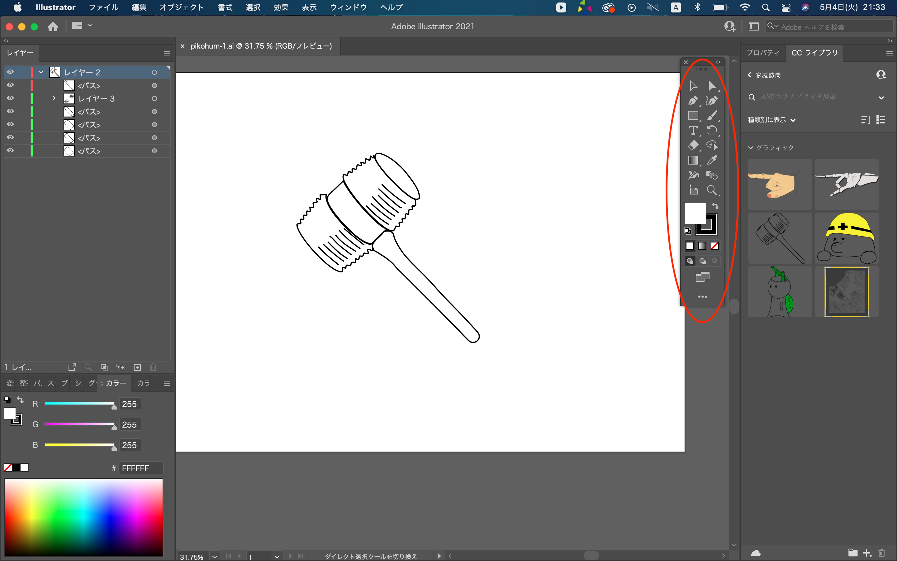
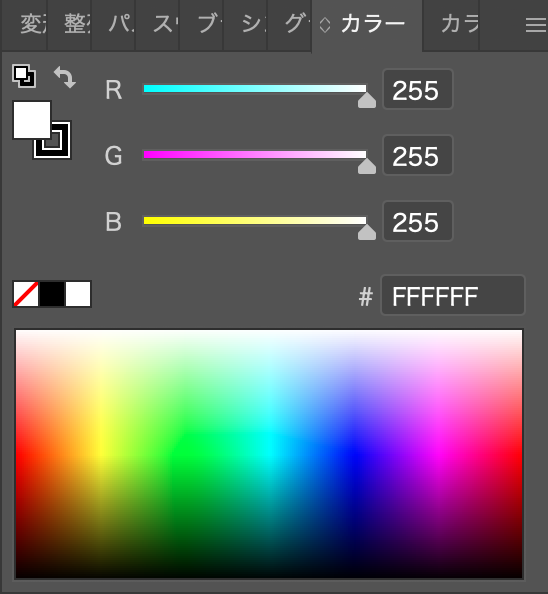
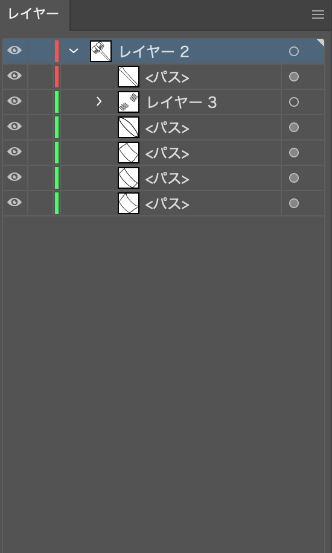

・アートボード内の操作
イラストを描く対象である白い部分をアートボードと呼ぶ。その中の操作は線を引く、文字を打つなど様々だが、その機能の切り替えを赤丸で囲った二列に並んだアイコンの中から選択して行う。

それぞれのアイコンの役割だが、複雑でまだ使いきれていないものが多いためよく使うものだけを説明する。この二つのアイコンは描いた線を選択する時に使う。 選択された線は動かす、拡大縮小、回転などが可能。 右側のアイコンは、線の微調整をする時に用いる時が多い。

この4つのアイコンは線を引く時に使う。 上二つは点と点を結ぶことで線を引くが、正直よくわからない。
左下のアイコンは図形の線を引くことができる。右下は手書きと同じ要領で線を引く。
・色
選択した線とその中に色をつける場合に使用する。 下にある色のグラデーションをクリックすると、クリックしたところの色になる。 数字を変えることで色を設定することもできるが、グラデーションをクリックして選んだ方が直感的にわかりやすいためそっちの方がやりやすい。
・レイヤー

レイヤーはそれぞれの重ね順を設定することができる。 絵が重なっている場合、どちらかが表示され、一方が見えなくなる。 重ね順を変えることで表示させたい方を変えることが可能。 上の線は重ね順も上になり、下にある線は重ね順も下になる。
・ccライブラリ

選択した絵をドラッグで右側の赤丸の部分に置くと、ccライブラリに保存される。 ccライブラリは他のAdobeのアプリと連動しているため、保存するとそれぞれのアプリでそのイラストを使うことができる。